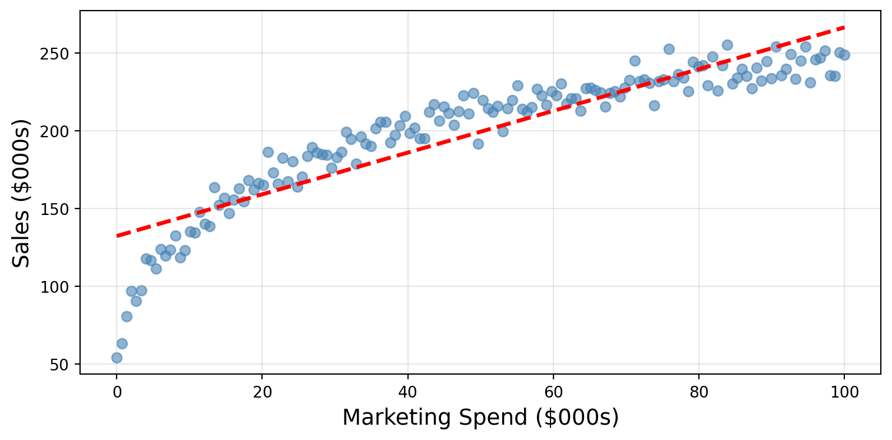
Decision Trees, Random Forests, and Feature Importance
Quick overview of today’s plan:
Activity
Converse with your neighbor and identify…
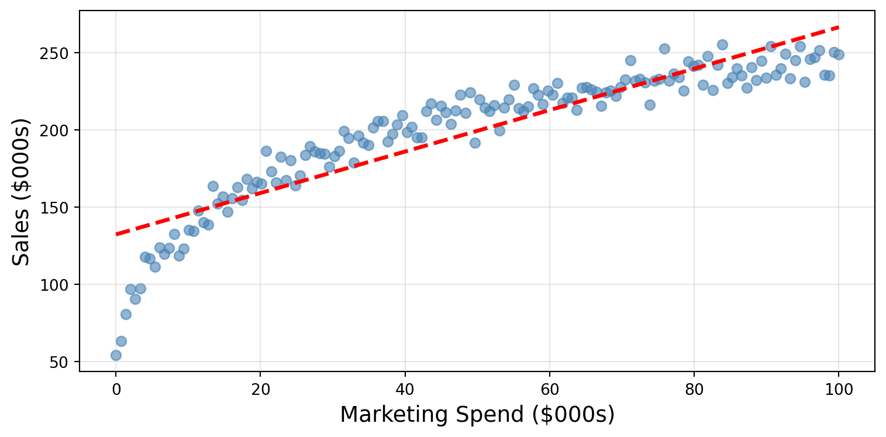
Caution
Real business data rarely follows straight lines
| Premium Brand | Unknown Brand | |
|---|---|---|
| High Quality | $200 | $80 |
| Low Quality | $120 | $40 |
The Pattern:
High quality means different things in different contexts.
Linear models struggle to capture these interactions without manual specification.
Same Quality → Different Prices (Context Matters!)
Same quality product gets wildly different prices based on brand. Linear models assume quality has one fixed effect - but here it depends on context.
Option 1: Linear Model
\[P(\text{default}) = \frac{1}{1+e^{-(\beta_0 + 0.0032 \cdot \text{balance} - 0.0015 \cdot \text{income} + ...)}}\]
“For each $100 increase in balance, the log-odds of default increase by 0.32…”
Option 2: Decision Tree
If balance > $1,200 Then 85% default risk
“If their balance is over $1,200 they have an 85% probability of defaulting.”
Decision trees offer:
✓ Capture nonlinear patterns naturally
✓ Automatically discover thresholds
✓ Naturally handle interactions
✓ Create clear if-then rules
✓ Mirror human decision-making
Think about a decision you make regularly using yes/no questions…
Examples:
Discuss with your neighbor:
Then we’ll take a few responses…
The Process:
Example: Loan Approval
Income > $50k?
├─ YES → Credit Score > 700?
│ ├─ YES → APPROVE
│ └─ NO → REVIEW
└─ NO → Has Co-signer?
├─ YES → CONSIDER
└─ NO → DENYflowchart TD
A[Loan Application] --> B{"Income > 50K?"}
B -->|Yes| C{"Credit Score > 700?"}
B -->|No| D{"Has Co-signer?"}
C -->|Yes| E[Approve]
C -->|No| F[Review]
D -->|Yes| G[Consider]
D -->|No| H[Deny]
style A fill:#e1f5fe
style E fill:#c8e6c9
style G fill:#fff3c4
style F fill:#fff3c4
style H fill:#ffcdd2
Key Components:
Reading a Tree:
flowchart TD
A["ROOT NODE<br/>All Data"] --> B{"INTERNAL NODE<br/>Question 1"}
B -->|Yes| C{"INTERNAL NODE<br/>Question 2A"}
B -->|No| D{"INTERNAL NODE<br/>Question 2B"}
C -->|Yes| E["LEAF<br/>Prediction A"]
C -->|No| F["LEAF<br/>Prediction B"]
D -->|Yes| G["LEAF<br/>Prediction C"]
D -->|No| H["LEAF<br/>Prediction D"]
style A fill:#e3f2fd,stroke:#1976d2,stroke-width:3px
style B fill:#fff3e0,stroke:#f57c00,stroke-width:2px
style C fill:#fff3e0,stroke:#f57c00,stroke-width:2px
style D fill:#fff3e0,stroke:#f57c00,stroke-width:2px
style E fill:#e8f5e8,stroke:#388e3c,stroke-width:2px
style F fill:#e8f5e8,stroke:#388e3c,stroke-width:2px
style G fill:#e8f5e8,stroke:#388e3c,stroke-width:2px
style H fill:#e8f5e8,stroke:#388e3c,stroke-width:2px
Imagine we’re predicting credit card default. Which feature split is better?
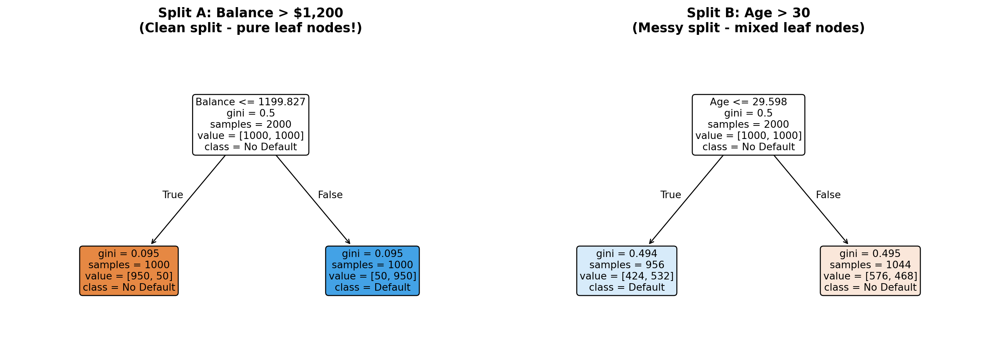
Which split creates cleaner, more organized groups?
Think about it… then we’ll see how the algorithm decides!The algorithm formalizes what we just intuitively understood!
The CART Algorithm:
Why this matters: Trees automatically find the thresholds that matter most in your data!
Gini Impurity: A “Messiness Meter”
Business Translation: Lower Gini = clearer business segments = more reliable rules
Example: “If balance > $1,200, 95% default” (Gini ≈ 0.1) is much better than “If age > 30, 55% default” (Gini ≈ 0.5)
Let’s build a decision tree to predict credit card defaults!
# Load data and prepare features
from ISLP import load_data
from sklearn.tree import DecisionTreeClassifier, plot_tree
from sklearn.model_selection import train_test_split
import matplotlib.pyplot as plt
# Load Default dataset
Default = load_data('Default')
Default['default'] = (Default['default'] == 'Yes').astype(int)
Default['student'] = (Default['student'] == 'Yes').astype(int)
# Prepare features and target
X = Default[['student', 'balance', 'income']]
y = Default['default']
# Split data
X_train, X_test, y_train, y_test = train_test_split(X, y, test_size=0.3, random_state=42)
# Build a simple tree (max_depth=3 for interpretability)
tree_model = DecisionTreeClassifier(max_depth=3, random_state=42)
tree_model.fit(X_train, y_train)
# Visualize the tree
plt.figure(figsize=(12, 6))
plot_tree(tree_model, feature_names=['student', 'balance', 'income'], class_names=['No Default', 'Default'], filled=True, rounded=True)
plt.title("Decision Tree: Credit Card Default Prediction")
plt.show()
# Check accuracy
print(f"Training accuracy: {tree_model.score(X_train, y_train):.3f}")
print(f"Test accuracy: {tree_model.score(X_test, y_test):.3f}")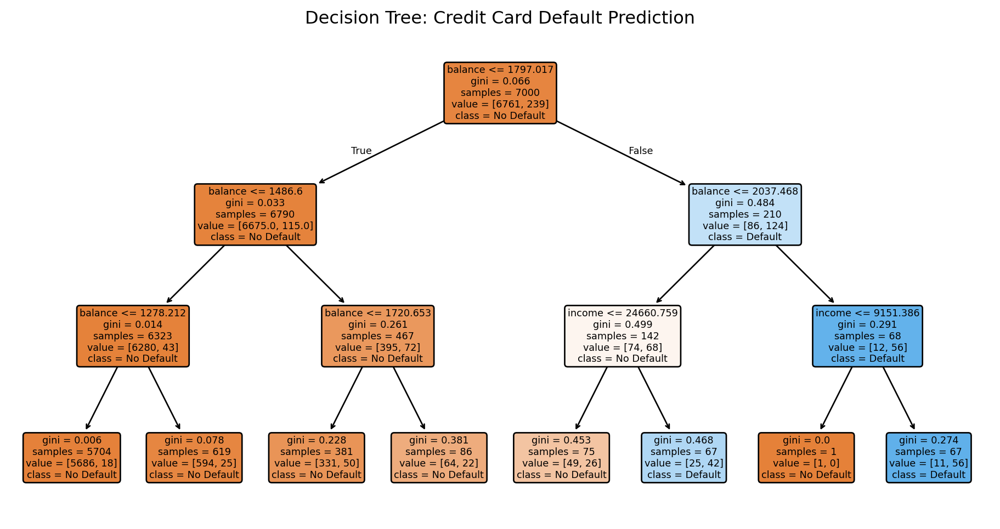
Training accuracy: 0.975
Test accuracy: 0.972Warning
Decision trees are interpretable, but they have two critical weaknesses:
Let’s see what these problems look like…
Small changes in data → completely different trees
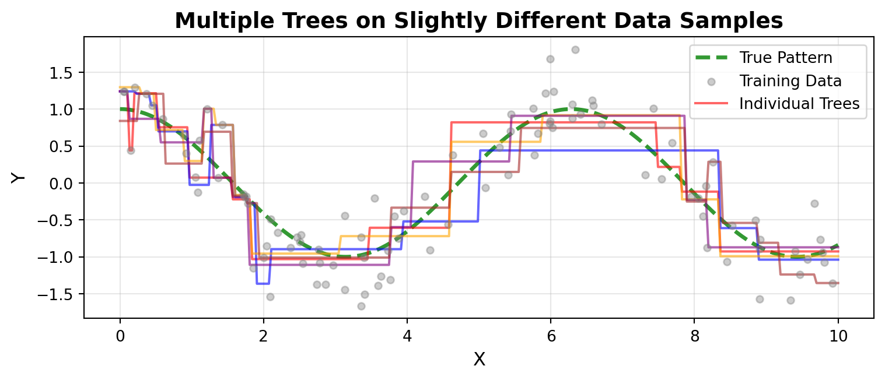
The Problem:
Business Impact:
Trees memorize training data instead of learning patterns
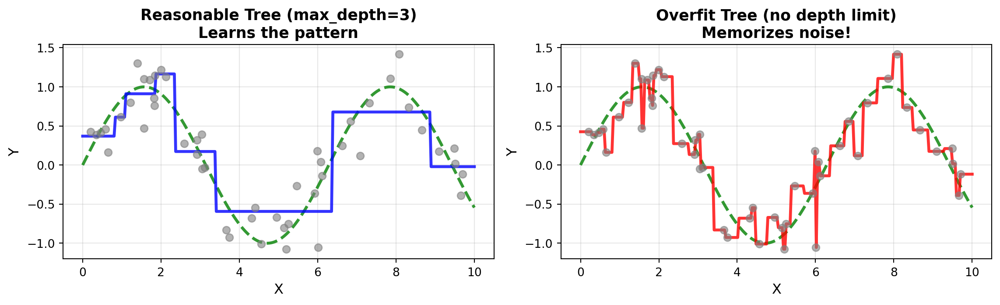
The Problem:
Business Impact:
When making important decisions, we rarely trust just one opinion…
Real-world examples:
Discuss with your neighbor:
Then we’ll take a few responses…
Random Forests improve on single decision trees through two main modifications:
1. Bootstrap Aggregating (Bagging)
Train many trees on different random samples of data
2. Feature Randomness
Each tree considers only a random subset of features at each split
Let’s see how each one works…
Creating diversity through random sampling
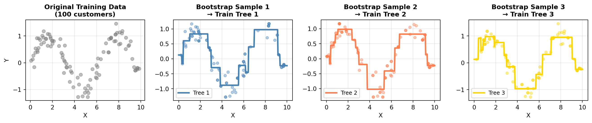
The Process: Original data → 3 bootstrap samples → Train 3 different trees → Aggregate predictions!
What if one feature is much stronger than the others?
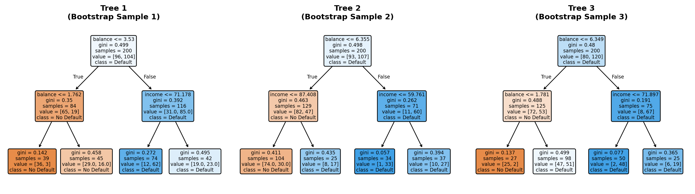
Problem: Tree Correlation
All trees have nearly identical structure (balance → income → student)
Solution: Force trees to use different features through feature randomness
At each split, consider only a random subset of features
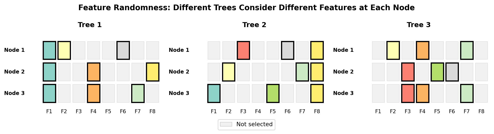
How It Works:
The Result:
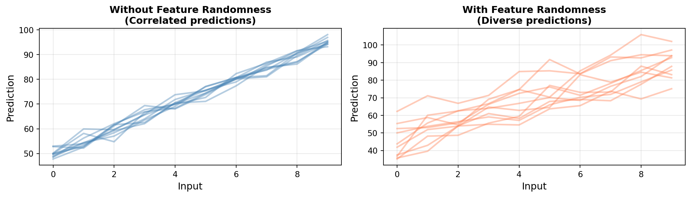
Without Feature Randomness:
With Feature Randomness:
Random forests outperform bagged trees through decorrelation
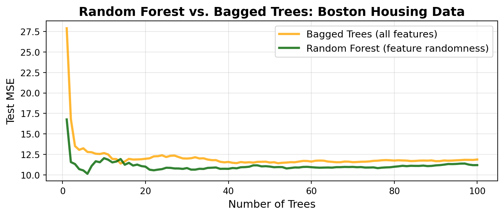
Final Performance (100 trees):
Bagged Trees MSE: 11.8729
Random Forest MSE: 11.1917
Improvement: 5.7%Key Insight
Feature randomness decorrelates trees, allowing their errors to cancel out more effectively when averaged. This is why random forests consistently outperform simple bagged trees!
Let’s compare performance on the Boston housing dataset!
from sklearn.tree import DecisionTreeRegressor
from sklearn.ensemble import RandomForestRegressor
from sklearn.metrics import root_mean_squared_error, r2_score
# Load Boston data (if not already loaded)
from ISLP import load_data
Boston = load_data('Boston')
X = Boston.drop('medv', axis=1)
y = Boston['medv']
# Split data
from sklearn.model_selection import train_test_split
X_train, X_test, y_train, y_test = train_test_split(X, y, test_size=0.3, random_state=42)
# Build Single Decision Tree
single_tree = DecisionTreeRegressor(max_depth=3, random_state=42)
single_tree.fit(X_train, y_train)
# Build Random Forest (100 trees)
rf_model = RandomForestRegressor(n_estimators=100, max_depth=3, random_state=42)
rf_model.fit(X_train, y_train)
# Compare performance
print("=== Single Decision Tree ===")
print(f"Training R²: {single_tree.score(X_train, y_train):.3f}")
print(f"Test R²: {single_tree.score(X_test, y_test):.3f}")
print(f"Test RMSE: ${root_mean_squared_error(y_test, single_tree.predict(X_test)):.2f}k")
print("\n=== Random Forest (100 trees) ===")
print(f"Training R²: {rf_model.score(X_train, y_train):.3f}")
print(f"Test R²: {rf_model.score(X_test, y_test):.3f}")
print(f"Test RMSE: ${root_mean_squared_error(y_test, rf_model.predict(X_test)):.2f}k")
print("\n=== Improvement ===")
r2_improvement = (rf_model.score(X_test, y_test) - single_tree.score(X_test, y_test)) / single_tree.score(X_test, y_test)
rmse_improvement = (root_mean_squared_error(y_test, single_tree.predict(X_test)) - root_mean_squared_error(y_test, rf_model.predict(X_test))) / root_mean_squared_error(y_test, single_tree.predict(X_test))
print(f"Test R² improvement: {r2_improvement*100:.2f}%")
print(f"Test RMSE improvement: {rmse_improvement*100:.2f}%")=== Single Decision Tree ===
Training R²: 0.825
Test R²: 0.773
Test RMSE: $4.11k
=== Random Forest (100 trees) ===
Training R²: 0.878
Test R²: 0.805
Test RMSE: $3.81k
=== Improvement ===
Test R² improvement: 4.17%
Test RMSE improvement: 7.36%flowchart LR
A[Tree 1<br/>Prediction] --> D[Average]
B[Tree 2<br/>Prediction] --> D
C[Tree 3<br/>Prediction] --> D
E[Tree ...<br/>Prediction] --> D
F[Tree 100<br/>Prediction] --> D
D --> G[Final<br/>Prediction]
style D fill:#ffd700,stroke:#ff8c00,stroke-width:3px
style G fill:#90ee90,stroke:#228b22,stroke-width:3px
The Mathematics of Wisdom:
Result: More accurate and stable predictions!
The Problem: Your model is accurate, but can you explain why?
The Trade-Off:
flowchart LR
A[Linear<br/>Regression] --> B[Decision<br/>Tree]
B --> C[Random<br/>Forest]
C --> D[Deep<br/>Learning]
style A fill:#90EE90
style B fill:#FFD700
style C fill:#FFA07A
style D fill:#FF6347
As we move right:
How We Interpret Each:
Linear Regression:
Decision Tree:
Random Forest:
A Common Business Conversation:
You: “Our Random Forest predicts customer churn with 94% accuracy!”
VP: “Excellent! So which customers are at risk and why?”
You: “Here’s a list of 500 high-risk customers.”
VP: “Great! What should we do to retain them?”
You: “Well… the model doesn’t exactly tell us that in a straightforward way…”
VP: “What do you mean? How can it predict churn without knowing what causes churn?”
You: “It does know—sort of. The patterns are just… distributed across hundreds of decision trees…”
VP: 🤔 “So you’re telling me to spend $200,000 on retention campaigns, but you can’t explain why these specific customers are at risk?”
The Challenge
Your model is accurate, but stakeholders need more than predictions—they need explanations and actionable insights.
Feature importance helps us answer the critical business questions:
Building Trust:
Supporting Decisions:
Feature Selection:
Regulatory Compliance:
Two critical questions about our model:
Question 1: Which Features Matter Most?
Feature Importance tells us which variables are driving our model’s predictions.
Example: “Balance is responsible for 70% of the model’s decision-making, while income contributes only 15%”
Question 2: How Do They Influence Predictions?
Partial Dependence Plots show us how predictions change as we vary an influential feature.
Example: “As balance increases from $0 to $2,000, default probability rises from 5% to 85%”
Our Approach
First, identify what matters → Then, understand how it matters
Two approaches to identify influential features:
1. Gini/MSE Importance
How it works:
Pros:
.feature_importances_Cons:
2. Permutation Importance
How it works:
Pros:
Cons:
Best Practice:
Use Gini for quick checks → validate with permutation importance
Let’s see what drives housing price predictions in our Random Forest!
import pandas as pd
from sklearn.inspection import permutation_importance
import matplotlib.pyplot as plt
# We already have our trained rf_model from the Boston housing demo
# Extract Gini-based importance
feature_names = X_train.columns
gini_importance = pd.DataFrame({
'feature': feature_names,
'gini_importance': rf_model.feature_importances_
}).sort_values('gini_importance', ascending=False)
print("=== Top 5 Features (Gini Importance) ===")
print(gini_importance.head())
# Calculate Permutation Importance on test set
perm_result = permutation_importance(
rf_model, X_test, y_test,
n_repeats=10, random_state=42, scoring='r2'
)
perm_importance = pd.DataFrame({
'feature': feature_names,
'perm_importance': perm_result.importances_mean
}).sort_values('perm_importance', ascending=False)
print("\n=== Top 5 Features (Permutation Importance) ===")
print(perm_importance.head())
# Visualize top 8 features
fig, (ax1, ax2) = plt.subplots(1, 2, figsize=(12, 4))
gini_importance.head(8).sort_values('gini_importance').set_index('feature')['gini_importance'].plot(
kind='barh', ax=ax1, color='steelblue', title='Gini Importance (Top 8)'
)
perm_importance.head(8).sort_values('perm_importance').set_index('feature')['perm_importance'].plot(
kind='barh', ax=ax2, color='coral', title='Permutation Importance (Top 8)'
)
plt.tight_layout()
plt.show()=== Top 5 Features (Gini Importance) ===
feature gini_importance
5 rm 0.471090
11 lstat 0.425896
7 dis 0.060453
0 crim 0.019231
10 ptratio 0.011489
=== Top 5 Features (Permutation Importance) ===
feature perm_importance
11 lstat 0.531901
5 rm 0.391349
7 dis 0.051834
10 ptratio 0.015919
0 crim 0.015026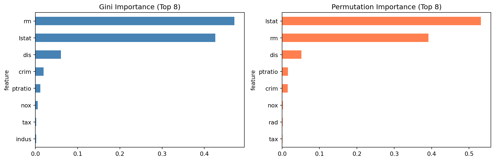
Feature importance tells us WHICH features matter, but not HOW they matter
What We Know:
lstat is the most important feature (35% importance)What We Don’t Know:
lstat increase or decrease price?Enter: Partial Dependence Plots (PDPs)
PDPs show how predictions change as we vary one feature while holding all others constant.
The insight: “As lstat increases from 5% to 30%, median home value decreases from $35k to $15k”
This is actionable intelligence!
Let’s visualize how lstat affects housing prices!
from sklearn.inspection import PartialDependenceDisplay
# Create PDP for lstat (our most important feature)
fig, ax = plt.subplots(figsize=(8, 5))
PartialDependenceDisplay.from_estimator(
rf_model,
X_train,
features=['lstat'],
grid_resolution=50,
ax=ax
)
plt.title('How lstat Affects Housing Price Predictions', fontsize=14, fontweight='bold')
plt.tight_layout()
plt.show()
# Create PDPs for multiple top features
fig, axes = plt.subplots(2, 2, figsize=(12, 10))
axes = axes.ravel()
top_features = ['lstat', 'rm', 'dis', 'crim'] # Top 4 features
PartialDependenceDisplay.from_estimator(
rf_model,
X_train,
features=top_features,
grid_resolution=50,
ax=axes
)
plt.suptitle('Partial Dependence Plots: Top 4 Features', fontsize=14, fontweight='bold')
plt.tight_layout()
plt.show()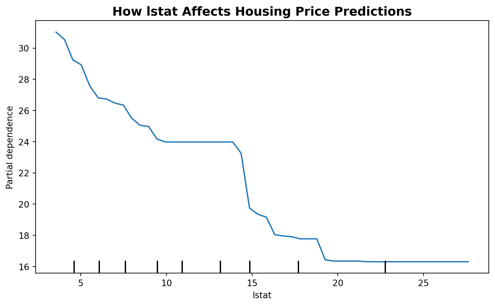
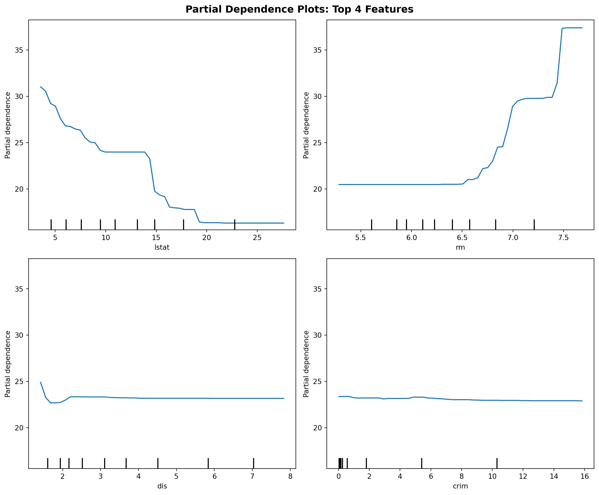
Decision Trees – Learn patterns through sequential yes/no questions, automatically discovering thresholds and interactions, but can be unstable and prone to overfitting.
Random Forests – Combine hundreds of diverse trees (via bootstrap sampling and feature randomness) to create stable, accurate predictions through voting or averaging.
Feature Importance – Bridges the gap between accuracy and interpretability, revealing which features drive predictions and enabling stakeholder trust and actionable insights.
The Big Picture – Tree-based models offer a powerful middle ground between simple linear models and complex black boxes, delivering strong performance with reasonable interpretability.
Between now and Thursday:
Thursday’s Lab:
Homework:
See you Thursday for hands-on practice!
“The best way to learn tree-based models is to build them yourself.”BANA 4080